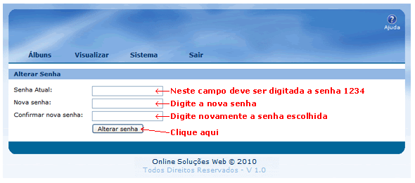
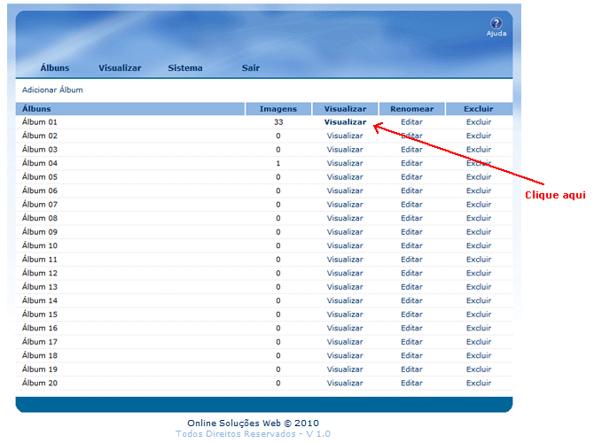
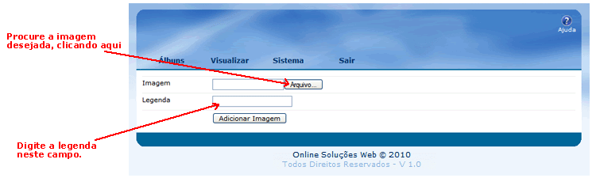
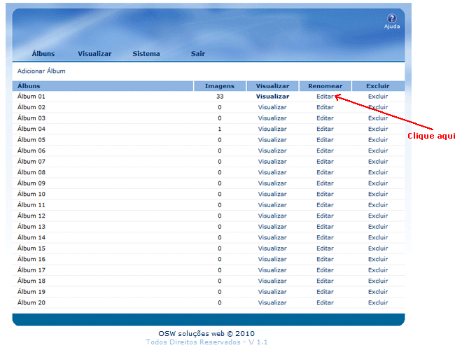
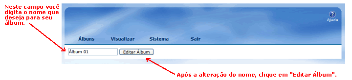
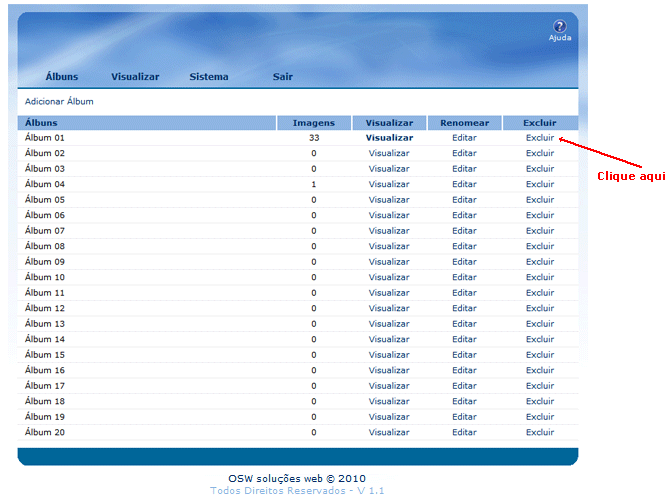
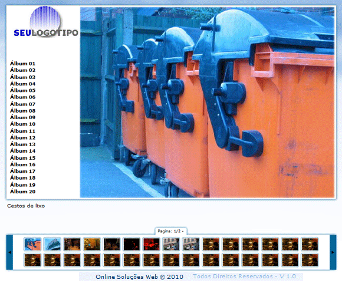

GALERIA DE IMAGENS OSW
A Galeria de Imagens é um dos recursos mais utilizados na internet. Ela marca presença em sites pessoais, institucionais e de comércio eletrônico, entre outros tipos. Através da utilização deste recurso é possível armazenar e compartilhar fotos com amigos e clientes.
Na Galeria de Imagens OSW as imagens podem ser organizadas por temas, isto é, você pode ter vários álbuns dentro da mesma galeria. É possível colocar até 20 álbuns diferentes. A quantidade de fotos a serem inseridas em cada álbum é infinita. Além disso, cada imagem pode ser acompanhada de um breve histórico ou legenda.
Para inserir o logotipo de sua empresa, salve a imagem com o nome "logotipo.jpg" dentro da pasta "galeria". As dimensões máximas permitidas são 170 x 120 ou 120 x 170 pixels.
Seja Bem-Vindo ao Gerenciamento da Galeria de Imagens!
Para acessar o Gerenciamento acesse: http://www.seusite.com.br/galeria/admin ou http://www.seusite.com.br/admin
A primeira tela que aparecerá será do Gerenciamento como ilustrado abaixo:
Todas as Galerias são instaladas com o mesmo usuário e senha. Como na imagem acima, usuário: admin e senha: 1234.
Para alterar a senha, você deverá clicar em "Sistema".

Pronto! Sua senha foi alterada!
Para adicionar ou remover álbuns e imagens, você deve clicar em "Álbuns".
Esta página apresenta todos os álbuns de sua Galeria, a quantidade de imagens, a visualização, a edição dos nomes dos álbuns e a exclusão.
Para visualizar as imagens da Galeria, colocar a legenda ou excluir fotos, você deve clicar em "Visualizar".



É possível alterar os nomes dos álbuns, clicando em "Editar".


Para excluir o álbum criado, clique em "Excluir".
Lembramos que ao clicar em "excluir", todas as imagens inseridas no álbum serão deletadas.

Para visualizar a Galeria pronta, clique em "Visualizar".
